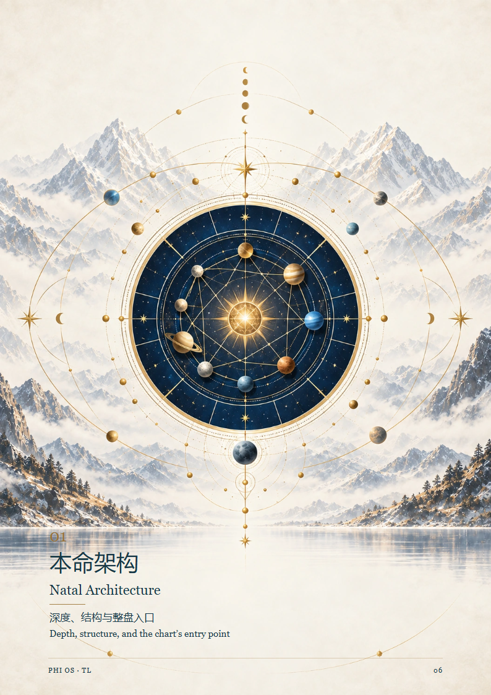
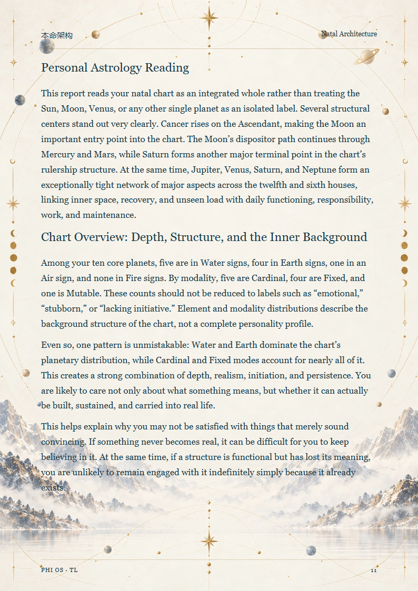
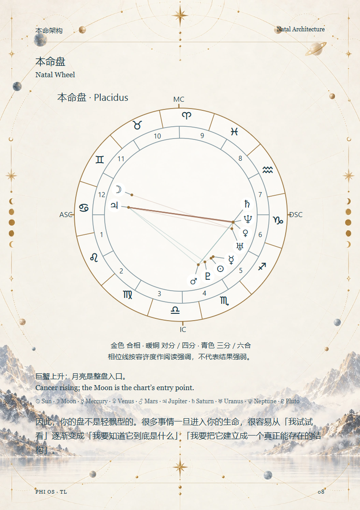
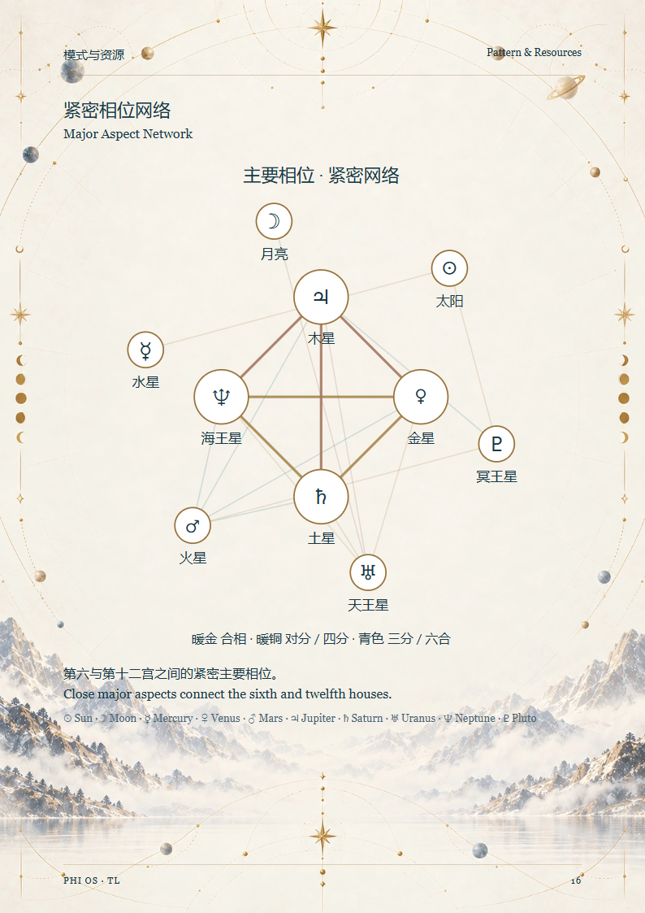
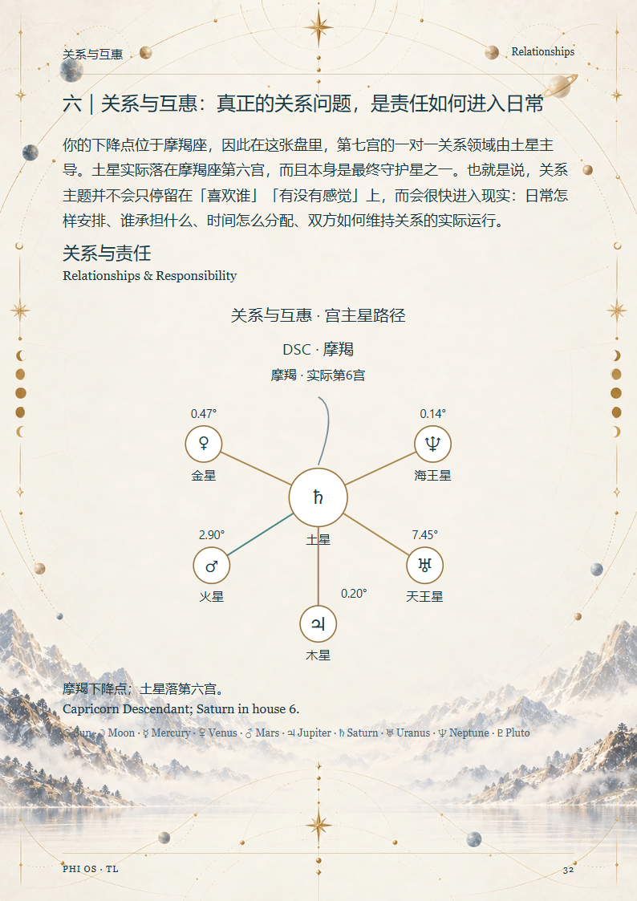
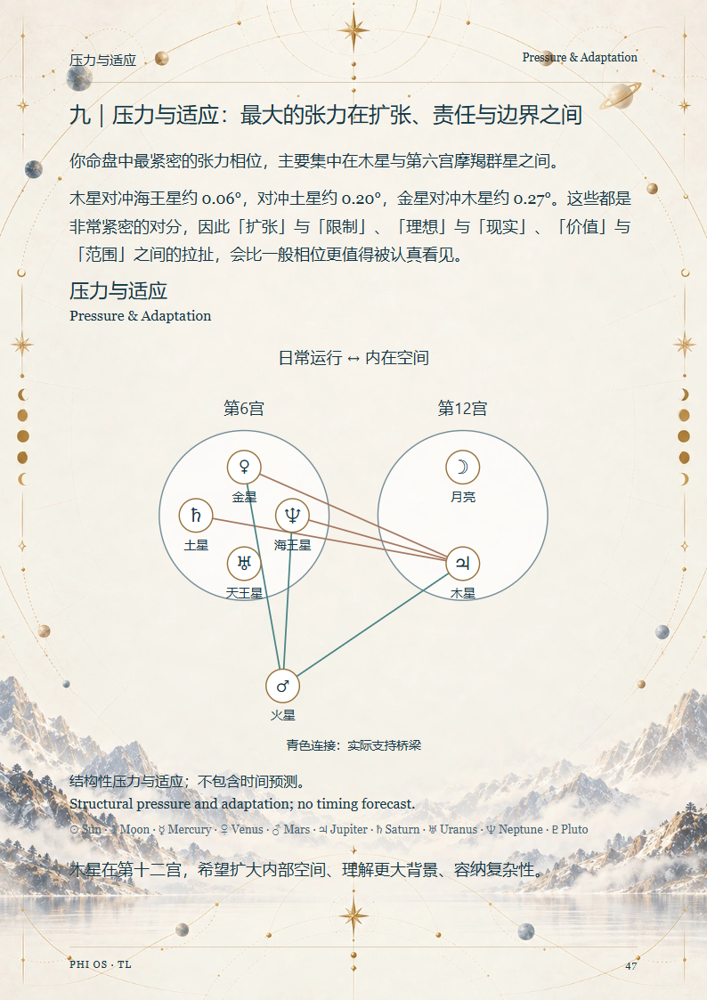
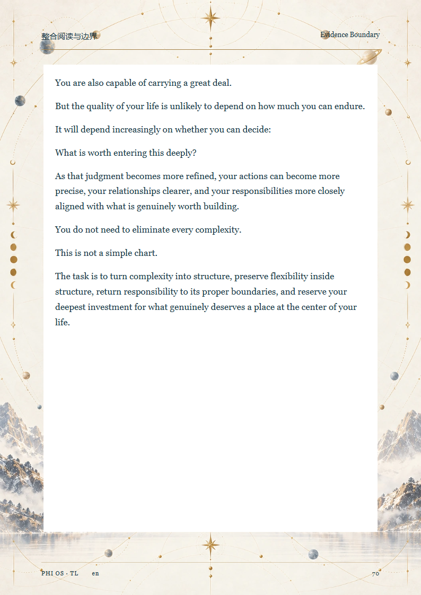

R1R3 / R1R4 · 实际版式对照
R1R4 取消大面板，保留原画与 R1R2 已接受的图表设计。英文内容独立等待 Human ACCEPT。
章节开篇
R1R3 · P6 R1R4 · P6
R1R4 · P6
中文阅读
R1R3 · P7 R1R4 · P7
R1R4 · P7
英文阅读
R1R3 · P12 R1R4 · P11
R1R4 · P11
AST-D01
R1R3 · P10 R1R4 · P8
R1R4 · P8
AST-D06
R1R3 · P20 R1R4 · P16
R1R4 · P16
AST-D09
R1R3 · P35 R1R4 · P32
R1R4 · P32
AST-D10
R1R3 · P41 R1R4 · P37
R1R4 · P37
AST-D11
R1R3 · P46 R1R4 · P42
R1R4 · P42
AST-D12
R1R3 · P52 R1R4 · P47
R1R4 · P47
AST-D15
R1R3 · P68 R1R4 · P62
R1R4 · P62
双语收束
R1R3 · P70
R1R4 · P64